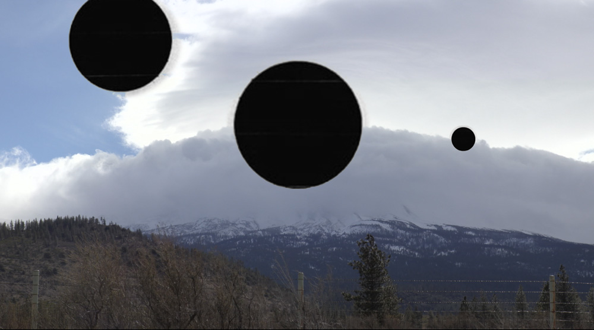

時間
2021/10/16 - 2022/02/20
地點
二樓2A~2B
客座策展人 陳麗瑩、許芳慈
本展探究戰後臺灣現代藝術的發展脈絡，及其在此歷史氛圍中所形成之深遠影響，並向臺灣現代藝術先驅們及其成就致敬。展覽涵蓋本館之重要典藏品與國際藝術家之借件作品。本館典藏品包括：李元佳、秦松、劉國松、蕭勤、李錫奇、韓湘寧，以及現代主義建築師王大閎與陳其寛的創作。國際藝術家的借件與相關文獻檔案，包括：當代藝術家陳麗可（Erika Tan）、蕭崇（Sung Tieu）、谷口瑪麗亞（Maria Taniguchi）、陳瀅如、普拉賈克塔．波特尼斯（Prajakta Potnis）、伊豆見彩、黃慧妍、于一蘭，以及書寫公廠與新加坡藝術家何敏慧（Joy Ho）和何秀玲（Joanne Ho）等，進一步闡述「現代」歷史中失語的片段。透過從家居物件至美術館典藏品，展覽一方面是冷戰時期藝術、設計與科技的交匯，同時亦揭示出「未竟」遺緒，持續定義著我們對於美好生活及地球家園的想像。